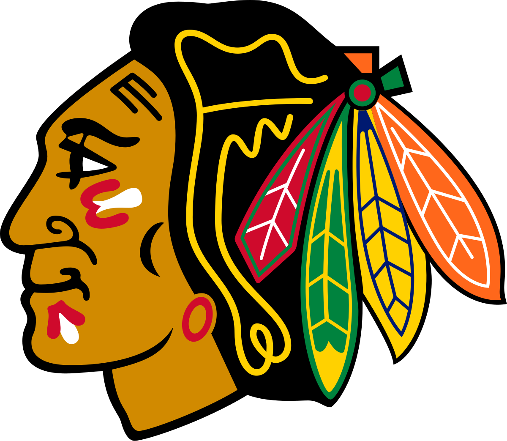

Chicago Blackhawks
The Chicago Blackhawks (spelled Black Hawks until 1986, and known colloquially as the Hawks) are a professional ice hockey team based in Chicago. The Blackhawks compete in the National Hockey League (NHL) as a member of the Central Division in the Western Conference. The Blackhawks have won six Stanley Cup championships since their founding in 1926. They are one of the "Original Six" NHL teams, along with the Detroit Red Wings, Montreal Canadiens, Toronto Maple Leafs, Boston Bruins, and New York Rangers. Since 1995, the team has played their home games at the United Center, which they share with the National Basketball Association's Chicago Bulls; both teams previously played at the now-demolished Chicago Stadium.
The Blackhawks' original owner was Frederic McLaughlin, a "hands-on" owner who fired many coaches during his ownership and led the team to win two Stanley Cup titles in 1934 and 1938. After McLaughlin's death in 1944, the team came under the ownership of the Norris family, who acted as their landlord as owners of the Chicago Stadium, and also owned stakes in several of the NHL teams. At first, the Norris ownership was as part of a syndicate fronted by longtime executive Bill Tobin, and the team languished in favor of the Norris-owned Detroit Red Wings. After the senior James E. Norris died in 1952, the Norris assets were spread among family members, and James D. Norris became the owner of the Blackhawks. The younger Norris took an active interest in the team, which won another Stanley Cup title under his ownership in 1961. After James D. Norris died in 1966, the Wirtz family became owners of the franchise. In 2007, the team came under the control of Rocky Wirtz, who is credited with turning around the organization, which had lost fan interest and competitiveness; under Wirtz, the Blackhawks won the Stanley Cup three times, in 2010, 2013 and 2015.[6][7] Rocky died in July 2023, and his son, Danny Wirtz, was named chairman of the Blackhawks.
_____________________________________________________________________________________
Founding: May 1, 1926, the NHL awarded an expansion franchise for Chicago to a syndicate headed by former football star Huntington Hardwick of Boston. At the same meeting, Hardwick arranged the purchase of the players of the Portland Rosebuds of the Western Hockey League for $100,000 from WHL president Frank Patrick in a deal brokered by Boston Bruins' owner Charles Adams.[8] However, only a month later, Hardwick's group sold out to Chicago coffee tycoon Frederic McLaughlin. McLaughlin had been a commander with the 333rd Machine Gun Battalion of the 86th Infantry Division during World War I.[10] This division was nicknamed the "Blackhawk Division" after Black Hawk,[11] a Native American of the Sauk nation who was a prominent figure in the history of Illinois.[10] McLaughlin named the new hockey team in honor of the military unit, making it one of many sports team names using Native Americans as icons. However, unlike the military division, the team's name was spelled in two words as "Black Hawks" until 1986, when the club officially became the "Blackhawks", based on the spelling found in the original franchise documents.
The Stanley Cup (French: La Coupe Stanley) is the championship trophy awarded annually to the National Hockey League (NHL) playoff champion. It is the oldest existing trophy to be awarded to a professional sports franchise in North America, and the International Ice Hockey Federation (IIHF) considers it to be one of the "most important championships available to the sport".[1] The trophy was commissioned in 1892 as the Dominion Hockey Challenge Cup and is named after Lord Stanley of Preston, the Governor General of Canada, who donated it as an award to Canada's top-ranking amateur ice hockey club. The entire Stanley family supported the sport, the sons and daughters all playing and promoting the game.[2] The first Cup was awarded in 1893 to the Montreal Hockey Club, and winners from 1893 to 1914 were determined by challenge games and league play. Professional teams first became eligible to challenge for the Stanley Cup in 1906. In 1915, the National Hockey Association (NHA) and the Pacific Coast Hockey Association (PCHA), the two main professional ice hockey organizations, reached an agreement in which their respective champions would face each other annually for the Stanley Cup. It was established as the de facto championship trophy of the NHL in 1926 and then the de jure NHL championship prize in 1947.
The Blackhawks wear predominantly red jerseys featuring three sets of black and white stripes along the sleeves and waist.[196][197] The team's logo is displayed on the front of each jersey, along with a "C", representing "Chicago", on each shoulder with two crossed tomahawks.[196] The Blackhawks debuted this design in 1955, and have since only made minor modifications to the jersey.[196][197] In 2007, The Blackhawks along with all other NHL teams, made minute changes to their uniforms by adding larger logo, a new collar with the NHL logo and a "baseball-style cut" along the bottom.[198] The team previously donned alternate third jersey that was primarily black with red and white stripes between 1996 and 2007.[197][199] The Blackhawks brought this design back in 2008, before making their 2009 Winter Classic jerseys their alternates between 2009 and 2011. After the 2019 Winter Classic, the Blackhawks made their jersey from the game their alternate, wearing it for three more games in 2019 and in three games during the 2019–20 season.[200] The Blackhawks' uniform was voted 1 of the 25 best in professional sports by Paul Lukas of GQ in November 2004.[201] The Hockey News voted the team's jersey as the best in the NHL.[202] Greg Wyshynski of Yahoo! Sports listed the Blackhawks home jerseys as the second best NHL jersey in the history of the NHL in 2017.[203] The Blackhawks were voted to have the best uniform in the history of the NHL in a fan-vote conducted by the NHL in 2017.
If this page isnt for you check out: Redbull or Capybara
The information for this page came from Chicago Blackhawks Wiki